AI Academy · Level 2 · Grade 7 · Week 32 · Student lesson
Project Problem and Success Test
Learn to understand, design, build, test and explain AI systems responsibly.
Project: Transparent Book Recommender
Before you start
Weeks 2 and 23: requirements and scores are separate.
Plan time to read, investigate and explain. Keep predictions separate from observations.
Student lesson · 1 of 14
Your mission
Your learning target
I can define a small application purpose.
I can turn requirements into checkable acceptance cases.
I can plan a feasible pipeline and human review.
Remember before reading
Close your notes first. A rough first answer helps us choose the right starting point; it is not a score for your ability.
Without opening the old lesson, explain one key idea from Permissions and Human Review. Give an example and a mistake that the idea helps you avoid.
Without opening the old lesson, explain one key idea from Evidence and Sources. Give an example and a mistake that the idea helps you avoid.
Without opening the old lesson, explain one key idea from Image and Voice Pipelines. Give an example and a mistake that the idea helps you avoid.
After trying, check the relevant lesson or ask your teacher. Change the part of your explanation that the evidence shows was wrong.
Week 32: Project Problem and Success Test
A project is defined by user need and measurable success, not feature count.
THINKER MISSION
Write a recommender brief and three acceptance tests.
Thinker name and date:
Readiness for the connected explanation
Why must a recommendation show no eligible option when every item fails a hard constraint?
Readiness for A reproducible data investigation
What should happen to an invalid duration instead of silently making it zero?
This week’s end goal
By the end, I can plan a recommender with acceptance tests before writing its selection code.
Student lesson · 2 of 14
Notice the evidence
PICTURE STORY
Notice → Predict → Explain
Begin with visible evidence. Do not explain more than the picture and information support.
MYSTERY
The learners must use project problem and success test to solve a problem. What information do they have? What decision or calculation do they make? What would count as evidence that it worked?
Three observations (what you can point to):
My prediction and the clue supporting it:
A closer explanation
Plan a fictional activity chooser for a teacher-supervised 20-minute session. It will validate a small local dataset, exclude over-limit items, rank eligible items using 2 * fun + learning and break ties alphabetically. It will explain the result for human review. It will not book, message or collect personal student profiles.
Apply the connected idea: A reproducible data investigation
Investigate the fictional question: among supplied sessions with valid duration records, what is the mean duration? Inputs are 10, 0, 20, None and -2 minutes. Our schema accepts exact integers 0 through 60. The wording deliberately limits the answer to accepted records.
Student lesson · 3 of 14
See how it works
VISUAL MECHANISM
Input → Process → Output
Trace the information. At each stage, ask what changed and how you could test it.
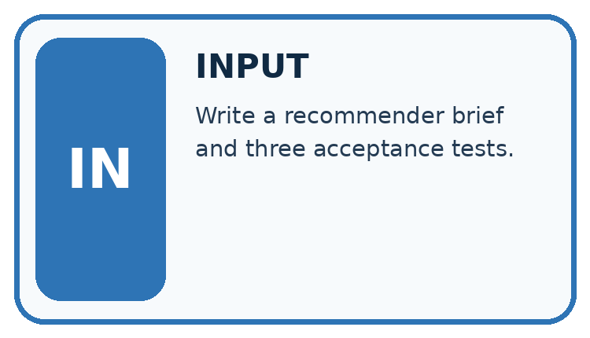
↓
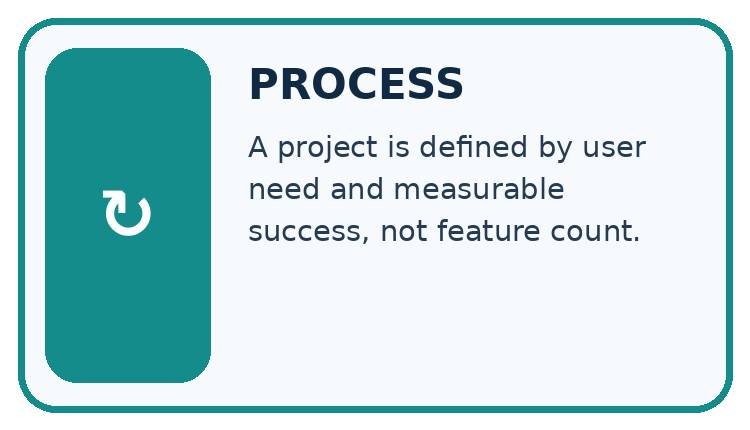
↓
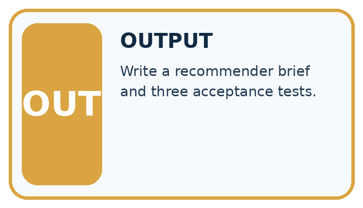
Which stage could fail even when the other two are correct? Explain:
A closer explanation
requirements = {"limit": 20, "fun_weight": 2,
"learning_weight": 1, "tie": "name ascending"}
print(requirements["limit"])
print(requirements["tie"])Follow the evidence
Define fields name, minutes, fun and learning. Require a nonempty text name, integer minutes 0 through 60 and integer ratings 0 through 5. Reject duplicate names because the tie rule uses names as identifiers. Write cases before implementing so requirements do not drift to fit outputs.
Turn a wish into a checkable plan
A phrase such as make a smart choice does not say what counts as success. The chooser plan does: validate the named fields, include durations at most 20 minutes, calculate 2 times fun plus learning, and use alphabetical names to break a tie. Describe the expected output and a no-match result before coding. Another learner should be able to use your plan to predict the same answer without guessing what you intended.
Apply the connected idea: A reproducible data investigation
raw = [10, 0, 20, None, -2]
valid = []
rejected = 0
for value in raw:
if type(value) is int and 0 <= value <= 60:
valid.append(value)
else:
rejected = rejected + 1
print(len(valid), rejected)
if len(valid) > 0:
print(sum(valid) / len(valid))
else:
print("No valid observations")Follow the evidence
The result is 3 accepted, 2 rejected, and mean 10.0 minutes. A reproducible report states the question, raw input version, schema, exclusion reasons, calculation and scope. Someone else should obtain the same result from the same inputs and rules.
Keep the denominator with the evidence
First filter the raw durations using the written schema. Keep 10, 0 and 20; reject None because the duration is unknown and -2 because it is outside the range. The accepted sum is 30 and the accepted count is three, so the accepted-record mean is 10 minutes. Dividing by all five supplied records would treat the two rejected durations as if they contributed known zeros. State three accepted out of five beside the mean.
Connect the picture and the explanation
Point to the input, the deciding step and the result in this week’s visual. Explain the same step in ordinary words. A picture helps when you can say what each part represents.
Student lesson · 4 of 14
Compare the cases
CASE GALLERY
Four Tests, Four Kinds of Evidence
A system is not understood until it survives more than one comfortable example.


NORMAL CASE: predict and name evidence. BOUNDARY CASE: predict and name evidence.


MISSING INFORMATION: predict and name evidence. TRANSFER CASE: predict and name evidence.
Which case is most likely to reveal a hidden assumption? Why?
Change one thing in the pictured case
Change: Reduce the limit from 8 to 5.
Prediction: Return no eligible item.
Reason: All three valid rows take more than five minutes.
Student lesson · 5 of 14
Words that unlock the idea
VOCABULARY LAB
Words You Can Use to Reason
A definition matters when you can recognize the idea, use it, and contrast it with a near-miss.
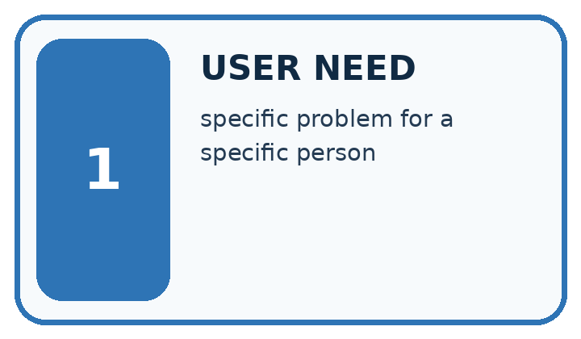
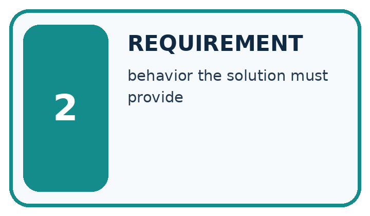
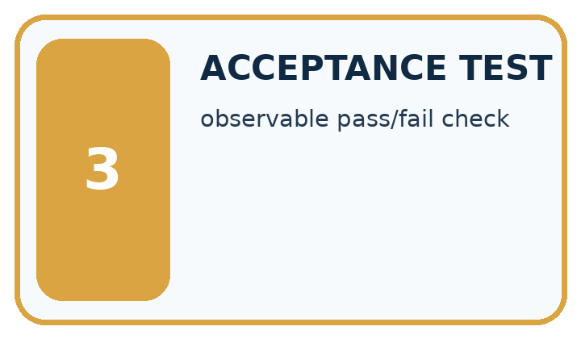
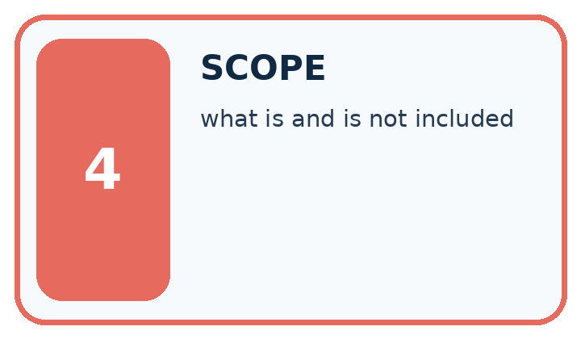
| Word | My own example | Not this / boundary |
|---|---|---|
| user need | The problem or desired outcome the system is meant to address for a person. | |
| requirement | A behaviour or condition the proposed system must satisfy. | |
| acceptance test | A predefined check that a product satisfies a stated requirement. | |
| scope | The tasks, users, information and actions included within an agreement or design. |
Words used in the closer explanation
| Word | Meaning |
|---|---|
| Acceptance case | An input and expected behavior used to judge a requirement |
| Non-goal | Something intentionally outside project scope |
| Prototype | A limited implementation for testing a design |
Terms for A reproducible data investigation
| Term | Meaning |
|---|---|
| Investigation | A documented process for answering a question with evidence |
| Pipeline | An ordered sequence of processing steps |
| Audit trail | A record of inputs, decisions and changes |
| Limitation | A reason a conclusion has restricted scope |
Student lesson · 6 of 14
Follow a worked example
WORKED EVIDENCE
Reason Step by Step
Predict first. Then check each step. A correct answer without visible reasoning is incomplete evidence.
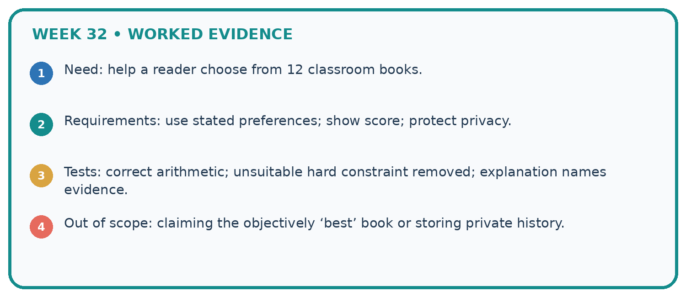
1. Need: help a reader choose from 12 classroom books.
2. Requirements: use stated preferences; show score; protect privacy.
3. Tests: correct arithmetic; unsuitable hard constraint removed; explanation names evidence.
4. Out of scope: claiming the objectively ‘best’ book or storing private history.
Recalculate, retrace, or restate the reasoning in your own representation:
CHECK Did the evidence answer the exact question? Did the total, path, or source record stay consistent?
A closer explanation
Apply the connected idea: A reproducible data investigation
Learn from the worked case
Cover the result before checking it. Say what is given, choose the procedure, and follow one step at a time. Then uncover the result and explain your first mismatch. Ask why a step is allowed, not only what number it produces.
A pictorial worked case: Project Problem and Success Test
A fictional reading-break chooser needs a transparent contract.
The facts we will use
Items have id text, minutes integer 0–30, interest integer 0–5. Request limit is integer 0–30.
Eligible if minutes<=limit; score=interest; highest wins; ties choose alphabetically smaller ID; invalid rows excluded and counted.

Read the picture one step at a time
Why this result follows
Planning fixes what success means before code returns an answer. The duration boundary is including equality, and the tie policy prevents accidental list-order dependence. A complete output may include why other rows were excluded. Test expectations should come from the contract rather than copying the first program result.
What this example does not establish
The supplied interest scores are fictional; the specification does not establish genuine learner preferences.
Student lesson · 7 of 14
Find and repair a mistake
ERROR DETECTIVE
Compare → Diagnose → Repair
Do not patch the answer. Find the earliest unsupported assumption, wrong step, or weak evidence.
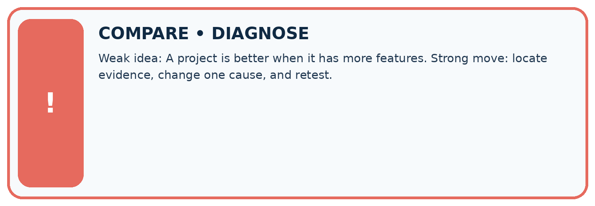
| Evidence record | Expected | Actual | Likely cause / next test |
|---|---|---|---|
| normal case | works | ||
| boundary case | stated rule | ||
| missing input | safe response | ||
| fresh transfer | generalizes |
Repair one cause. Why is this repair better than changing several things?
A closer explanation
The scope is a rule-based prototype using fictional ratings. It does not demonstrate personalized learning impact or a trained AI model. A clear non-goal protects students from building an untestable or overly broad project.
Apply the connected idea: A reproducible data investigation
Missing or invalid durations might belong to unusually long sessions. The accepted mean may therefore differ from the full group's mean. Do not make a causal claim from this descriptive investigation.
Student lesson · 8 of 14
Practise together
LOGIC STUDIO
Trace Before You Run
Block code, pseudocode, tables, and diagrams are different ways to expose the same reasoning.

SET evidence_record PREDICT expected_result RUN one normal case and one boundary case COMPARE actual_result with expected_result IF different: locate first cause; change one factor; RETEST EXPLAIN result, limitation, and next safe step
Trace one input. Which line changes the state or chooses a path?
A closer explanation
A requirement such as make a smart choice cannot be tested precisely. Replace it with a stated score, limit, tie rule and output explanation. If real feedback later changes the policy, record a versioned change rather than rewriting previous evidence.
Apply the connected idea: A reproducible data investigation
Dividing the accepted total 30 by all five records gives 6 and answers no clear observed-duration question. Use the accepted count for this mean, disclose exclusions, and never describe it as the average for every supplied session.
Practise with less help: Write an acceptance case
Use workbook W2 for the connected example “Planning the application”. First fill the input and rule boxes. Try the middle steps before asking for a hint. After a hint, try the next step yourself.
| Plan | Do | Check |
|---|---|---|
| What is given? Which rule or procedure applies? | Record each intermediate step. | Does the result follow? What remains unknown? |
Explain your trace to a partner. Your partner points to one step to check. Swap roles on the next case. Each person writes their own explanation.
Check your reasoning
Use the worked case for Planning the application. Proposed explanation: “A successful run proves the conclusion”. Decide whether this explanation is supported. Point to the step or supplied fact that decides; explain your repair if needed.
Answer on your own before discussion. If you are unsure, say which step you need help with.
Practise the connected topic: A reproducible data investigation
Use its named workbook W2. Identify the given inputs, try the middle steps with less help, then explain your trace. Check this claim before group discussion: A successful run proves the conclusion
Explain the picture
Write an equality test and explain which requirement it checks.
This is supported practice. Keep the separately named independent case for an attempt before feedback.
Student lesson · 9 of 14
Run the investigation
EVIDENCE LAB
Predict → Test → Record → Explain
Keep expected and actual results separate. Surprises are useful data when recorded honestly.
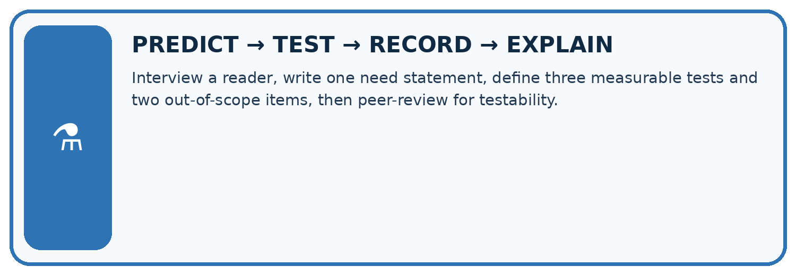
Interview a reader, write one need statement, define three measurable tests and two out-of-scope items, then peer-review for testability.
| Test / input | Prediction | Actual | Evidence / calculation | Change or keep? |
|---|---|---|---|---|
| normal | ||||
| boundary | ||||
| missing | ||||
| fresh transfer |
What did the hardest test teach you that the normal test did not?
Plan → try → check
Before trying: what do I expect, and why? While trying: which step could first go wrong? Afterwards: what did I actually observe, and what should change? Keep “not run” if you only traced the procedure.
Student lesson · 10 of 14
Build your understanding
MASTERY
From Knowing the Word to Owning the Idea
Move upward only when you can produce evidence without copying the worked example.

1 • NAME: Define the concept without repeating the textbook.
2 • TRACE: Show the information, state, branch, calculation, or evidence path.
3 • APPLY: Solve a different example independently.
4 • CHALLENGE: Find a boundary case, counterexample, or unfair outcome.
5 • EXPLAIN LIMITS: Say when the result should not be trusted or used alone.
My strongest evidence of independent understanding:
Student lesson · 11 of 14
Connect your project
CUMULATIVE PROJECT
Transparent Book Recommender
Every week adds one inspectable piece. The system must show how it reached a result.
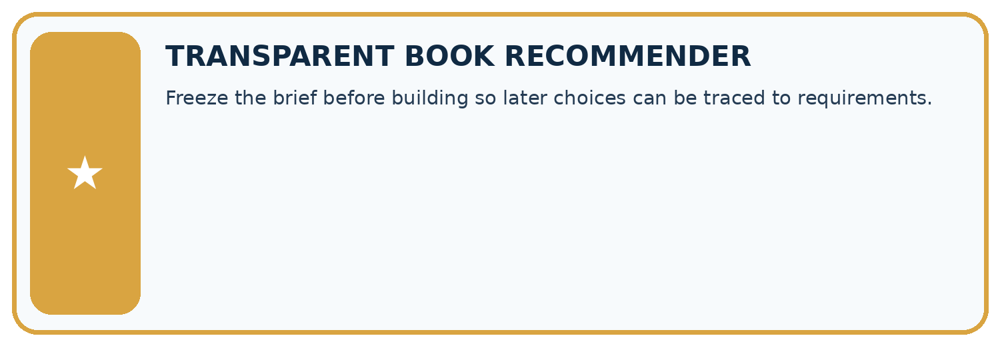
THIS WEEK’S CHECKPOINT Freeze the brief before building so later choices can be traced to requirements.
SYSTEM MAP Reader need → allowed inputs → transparent rule or score → ranked candidates → explanation → test record → human decision
What will you add, change, or verify in the project this week?
What should remain under human control?
RESPONSIBLE DESIGN Collect only necessary information. Show uncertainty and limits. Never confuse a ranking with a fact about a person.
Evidence for your project
Retain the Transparent Book Recommender’s schema, constraints, score, tie rule and acceptance table as its build specification.
Student lesson · 12 of 14
Show what you know
INDEPENDENT MASTERY PROOF
Explain • Transfer • Test • Defend
Complete this page without copying the worked example. Your reasoning matters more than decoration.
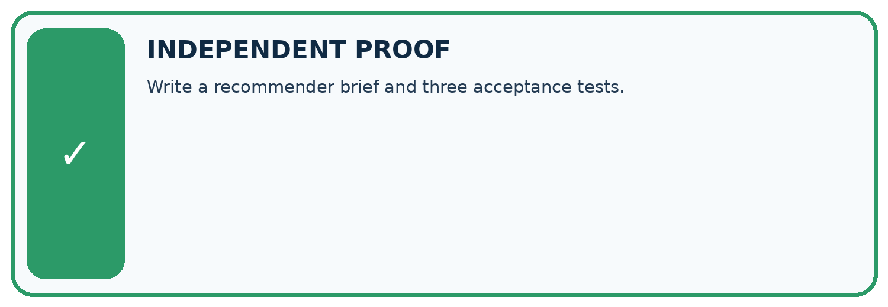
CHALLENGE Write a recommender brief and three acceptance tests.
1. My fresh example, trace, calculation, or design:
2. My evidence that it works (include a boundary or missing-data case):
3. One limitation, fairness concern, or situation needing human review:
SELF-CHECK □ I explained the mechanism □ I used evidence □ I tested a fresh case □ I named a limitation □ I can answer ‘why?’
Student lesson · 13 of 14
Study a complete case
Week 32 Worked case
Use the supplied details to practise the weekly concept before attempting the independent question. This case extends the illustrated lesson.
The situation
A project recommends from ten approved books using genre and length.
The question
Define acceptance tests.
Worked explanation
Verify book existence, hard constraints, correct scoring explanations, tie handling and no-match behaviour on predefined requests.
Explain it in your own words
Which detail supports the answer, and why does it matter?
Trace the supplied case visually
Turn a project goal into acceptance tests
| Evidence or stage | Value or result |
|---|---|
| Catalogue | Suggestion must be one of ten approved books |
| Constraints | Genre and length respected |
| Scoring | Explanation matches the calculation |
| Boundaries | Handle ties and no matches |
A project recommends from ten approved books using genre and length.
Define acceptance tests.
Verify book existence, hard constraints, correct scoring explanations, tie handling and no-match behaviour on predefined requests.
Student lesson · 14 of 14
Try a new case independently
Independent case: Plan independently
Plan a 15-minute fictional club chooser. Specify schema, score, duration limit, tie rule, invalid-data behavior, output and three acceptance cases.
Attempt this case before feedback. Record any help. Earlier examples below are further practice; a case already practised with feedback cannot establish fresh transfer.
Week 32 Independent application
Close the worked explanation. Apply the idea to this different question without copying.
Define a testable goal for a book recommender serving readers who want short space books. Include a concrete success condition.
My answer, with a trace, calculation or supporting evidence
Create and test
Change one relevant detail. Predict the result before testing. Include a boundary or missing-information case when it helps reveal a limit.
My changed input and expected result
Connect to your project
Freeze the brief before building so later choices can be traced to requirements.
The evidence I will keep
Your teacher has the independent answer and scoring criteria. Complete the matching workbook week to keep your practice evidence together.
Transfer practice from the original programme
Specify three acceptance tests for a recommender: a normal match, a tied score and no qualifying book. Include expected behaviour before implementation.
Use feedback to improve
Attempt the independent case before hints. Record whether you worked alone, used a hint or followed a model. After feedback, fix the first unsupported step and explain why it changed. A later check uses a changed case, not a copied answer.